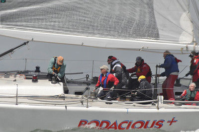

Sailing Stuff
San Francisco is one of the world's best sailing locations! I started sailing in April 2011 with the Cal Sailing Club, where I'm now rated as a senior skipper. I also race regularly on several boats, including the 1D48 Bodacious+ as jib and spinnaker trimmer. I participate in the local ocean races on the Santana 35 Ahi, last year we won our admittedly meager OYRA division. This year I am getting involved with the Melges 24 Rusalka's campaign towards the 2013 Worlds which will be held in San Francisco.
My full sailing resume is available here.
Sailing Resources
- My notes for clinics I taught on the Racing Rules of Sailing at Cal Sailing Club:
- Jos Spijkerman's excellent racing rules blog: Look to Windward